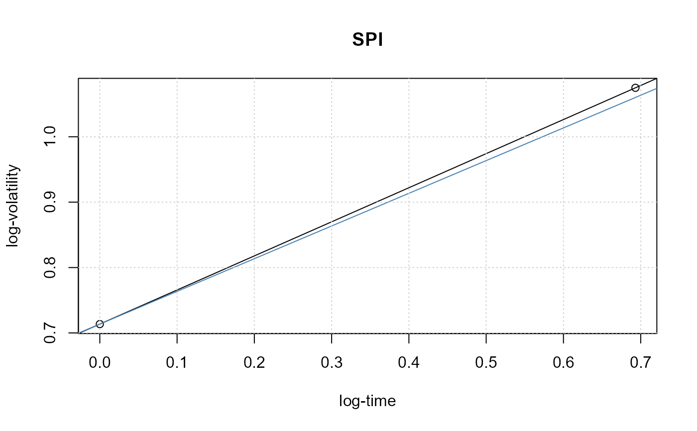
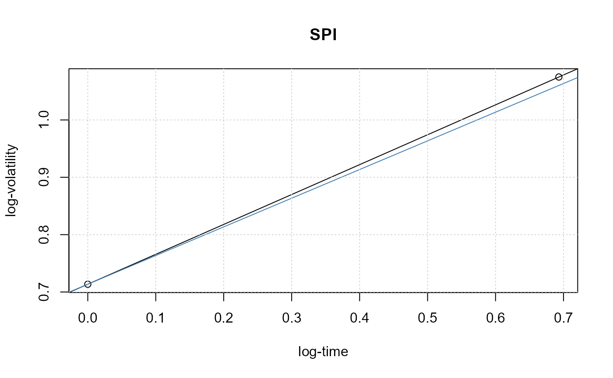

Scaling Law Bahaviour
plot-scalinglawPlot.RdEvaluates the scaling exponent of a financial return series and plots the scaling law.
Arguments
- doplot
a logical value. Should a plot be displayed?
- labels
a logical value. Whether or not x- and y-axes should be automatically labeled and a default main title should be added to the plot. By default
TRUE.- span
an integer value, determines for the
qqgaussPlotthe plot range, by default 5, and for thescalingPlota reasonable number of of points for the scaling range, by default daily data with 252 business days per year are assumed.- trace
a logical value. Should the computation be traced?
- x
an uni- or multivariate return series of class
timeSeriesor any other object which can be transformed by the functionas.timeSeries()into an object of classtimeSeries.- ...
arguments to be passed.
Value
returns a list with the following components: Intercept,
Exponent the scaling exponent, and InverseExponent its inverse value.
Details
Scaling Behavior:
The function scalingPlot plots the scaling law of financial
time series under aggregation and returns an estimate for the scaling
exponent. The scaling behavior is a very striking effect of the
foreign exchange market and also other markets expressing a regular
structure for the volatility. Considering the average absolute
return over individual data periods one finds a scaling power law
which relates the mean volatility over given time intervals
to the size of these intervals. The power law is in many cases
valid over several orders of magnitude in time. Its exponent
usually deviates significantly from a Gaussian random walk model
which implies 1/2.
References
Taylor S.J. (1986); Modeling Financial Time Series, John Wiley and Sons, Chichester.
Examples
## data -
data(LPP2005REC, package = "timeSeries")
SPI <- LPP2005REC[, "SPI"]
plot(SPI, type = "l", col = "steelblue", main = "SP500")
abline(h = 0, col = "grey")
 ## teffectPlot -
# Scaling Law Effect:
scalinglawPlot(SPI)

#>
#> Scaling Law: SPI
#> Plot Intercept 0.7135344
#> Plot Slope 0.5213102
#> Plot Inverse Slope 1.918244
#>
## teffectPlot -
# Scaling Law Effect:
scalinglawPlot(SPI)

#>
#> Scaling Law: SPI
#> Plot Intercept 0.7135344
#> Plot Slope 0.5213102
#> Plot Inverse Slope 1.918244
#>